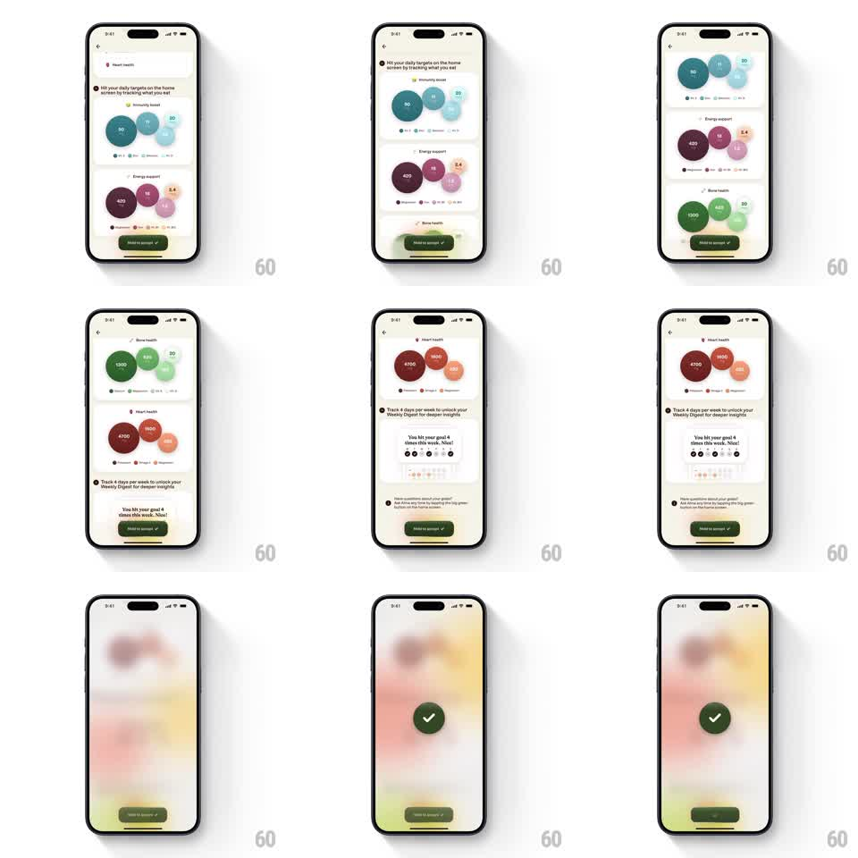

Media
Frame-by-frame

Rebuild this interaction 1:1: Alma's goal acceptance - the goals recap screen scrolls through nutrient bubble clusters per goal, and holding the "Hold to accept" button fills it, blurs the whole screen behind, and pops a springy green checkmark to confirm.

Rebuild this interaction 1:1: Alma's goal acceptance - the goals recap screen scrolls through nutrient bubble clusters per goal, and holding the "Hold to accept" button fills it, blurs the whole screen behind, and pops a springy green checkmark to confirm. ## Integration Integration: stack-agnostic spec - springs given as stiffness/damping, timed motions as duration + curve; map every value to your framework and animation library of choice. ## Scene Cream recap screen: back chevron, "You're adding 4 goals, here's what to expect!" with a goal list (Immunity boost, Energy support, Bone health, Heart health), then scrollable cards per goal showing clusters of colored nutrient bubbles with values (90/11/20, 420/18/2.4, 1200/429/20, 4700/980/2) and a "You hit your goal 4 times this week" mock. Bottom: dark green "Hold to accept" button. ## Motion spec Pattern: hold-to-confirm with blur reveal, ~1s hold + 600ms reveal. - Hold: pressing fills the button from left to right (1s linear) with the label dimming; releasing early drains it back (300ms). - Blur: on completion the entire screen blurs (radius 0 -> 20px, 400ms) while warming to a soft pastel wash of the goal colors. - Check: a dark green circular badge with a white check springs in center (scale 0.5 -> 1.12 -> 1, spring ~320/16, 450ms), the check drawing on (stroke, 150ms). - Exit: the success state holds ~800ms, then fades to the next screen (300ms). ## Calibration - The blur is progressive and tied to the hold completing - no blur before full charge. - The check lands with exactly one overshoot - no rubber-band wobble. ## Reduced motion Hold completes with a 250ms cross-fade to the success state; no blur. ## Don't miss - The pastel wash behind the check uses the actual goal bubble colors, heavily blurred. - The button says "Hold to accept" with a small check icon - the affordance is explicit.